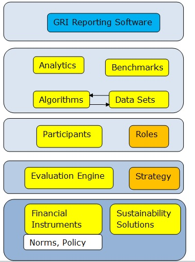
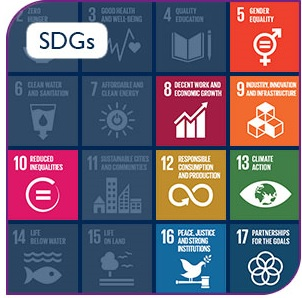
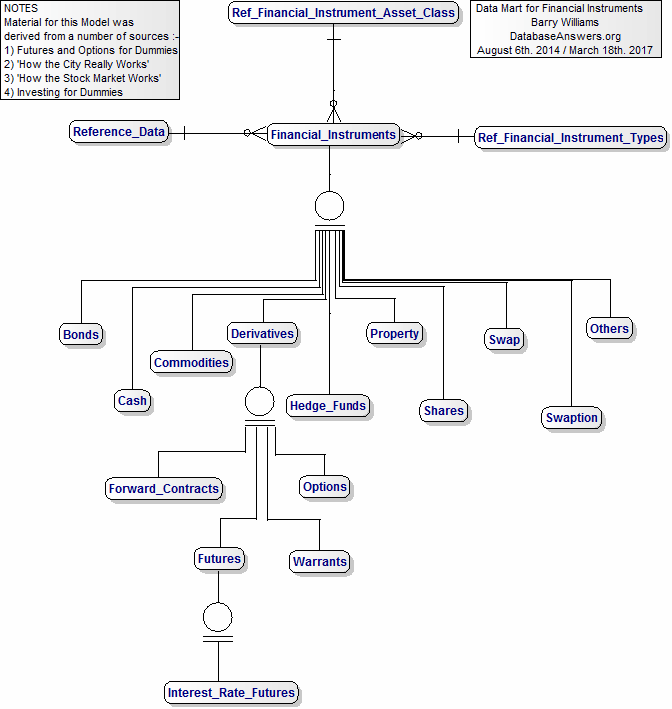
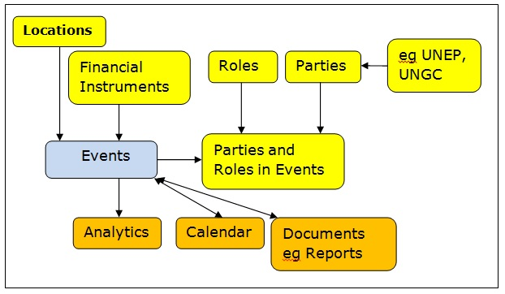
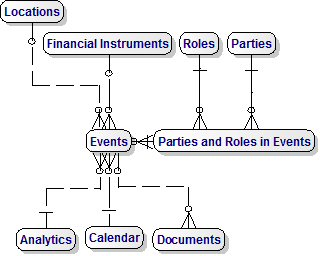

|
These are our Giudelines that are taken verbatim from the Action Platform
Financial Innovation for the SDGs
“To achieve the SDGs (Sustainable Development Goals), investors need to be activated at a different level and new products and innovations are needed.
The UNGC will lead the search for innovative financial instruments to redirect finance towards critical sustainable solutions.
The 17 SDGs provide goals to align investing strategy and track progress.
The UN Global Compact’s Catalyzing Financial Innovation initiative will map instruments and tools, while bringing a revolution in financial innovation.
Expected Outcomes
1. A UN Global Compact-hosted online platform encompassing the mapping of instruments, as well as a laboratory for new concepts.”
We have drafted a Plan and a Glossary of Terms that will be included in the Tutorial for this Platform.
Information for these Data Models has been taken from this UNGC document describing the
UN Global Compact 2017 Toolbox.
We were particularly interested in this information on the the Financial Innovation Platform
and these words "... this platform will identify innovative financial instruments that have the potential to direct private finance towards critical sustainability solutions.
The Platform will develop guidance on impact investment strategies that support sustainable development, map current
and emerging financial instruments, and provide a laboratory for the development of innovative instruments."
Our first interest is the Platform for Financial Innovation for the SDGs (Sustainable Development Goals).
The UNGC document states "...this platform will identify innovative financial instruments that have the
potential to direct private
finance towards critical sustainability solutions.
Development,map current and emerging financial financial instruments, and provide a laboratory
for the development of innovative instruments."
|
|
Steps in defining the Platform :- "Financial Innovation for the SDGs."
|
Reporting Facilities
|
Step 6. Define the Layers in the Platform
The user-oriented Entities are in the top layer and the basic Entities are at the bottom.

|
Reporting Facilities are a very important Component of our Platform and will be chosen to be compliant with
Global Reporting Initiative (GRI) guidelines
using software provided by a supplier such as Cloudapps
perhaps using
SAP as an example.
GRI supports the UNGC Sustainability Development Goals (SDGs)

Useful Links :-
1. UNGC - Collaboration Platform LEAD
2. What is UNGC'S Financial
3. Value Driver Model
|
Step 5. Create the Logical Data Mart for Financial Instruments
This is from our
Investment Banking Page

|
Step 3. Create the Conceptual Data Model for Events and Financial Instruments

|
Step 4. Create the Logical Data Model
This is an important step toward building the Database.

|
Step 1. Define the 'Things of Interest' (Entities)
Entities include - 'Financial instruments, investment strategies, innovative instruments,
Participants (LEAD companies, Local Networks, UN agencies, other agencies
UN Partners), sustainability solutions'.
|
Step 2. Business Rules
Events include 'Introduce new Investent', 'Evaluate possible Investment','Drop Investment' and so on.
Participants are named indiviudals, such as JOhn Smith.
Roles are what these Individuals do, and include Analysts, Financial Planners and Investors,
|
Barry Williams
Principal Consultant
Database Answers Ltd.
London, England
May 8th. 2017
|
© Database Answers Ltd. 2017
|